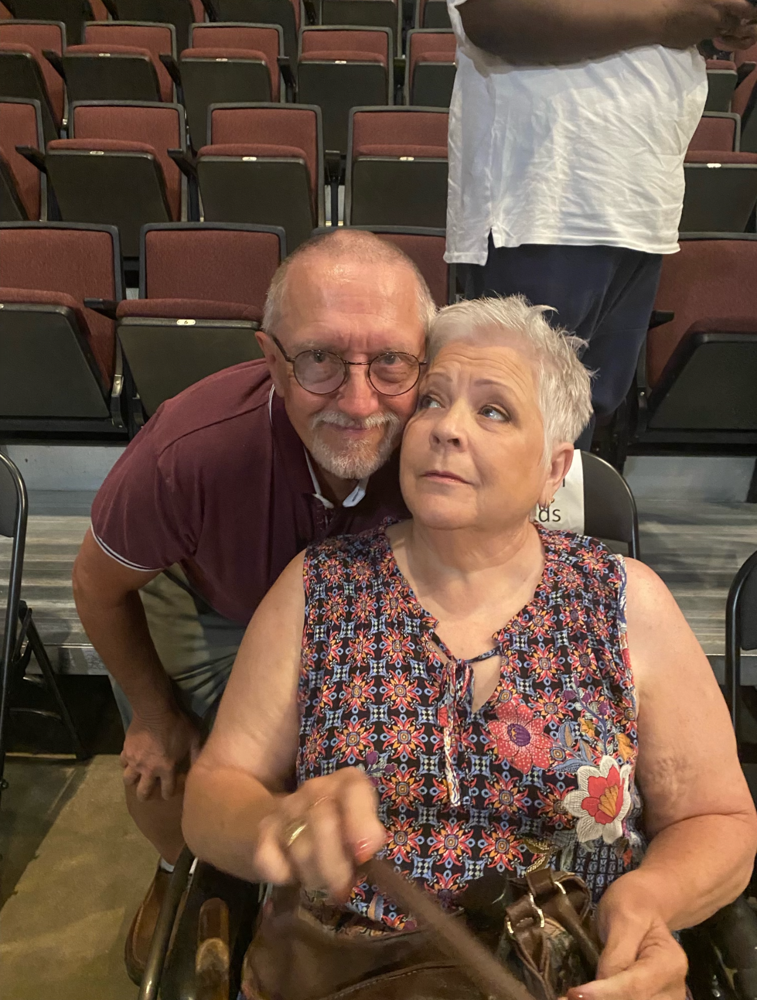

Jill and Randy Allred
One August night in a bowling alley in Des Moines, Iowa a young lad named James Stover was randomly partnered with a stranger during a league night. The two struck up a friendship and one evening after bowling, the stranger, named Randy Allred, gave James a ride home. James brought Randy in to meet his younger sister Jill, and Jill and James's parents Laura and Gerald. And as they say in Hollywood, "That's all she wrote."
Story
Danville
Children
- First Date
After Jill and Randy were introduced by Uncle Jimmy, they spent their first date at the Rubgy Club of Des Moines. They spent hours watching the local Rubgy matches and getting to know each other. At the end of the evening, Jill drove Randy home in his brand new 1972 Mercury Comet after Randy became ill. Randy said that he knew he could trust her after that. - Proposal
Late October of 1973, Randy brought McDonald's to Jill during her lunch break at the Walgreen's in Des Moines on East Euclid Ave. Randy asked Jill during that lunch break to become his wife, and she happily said yes. - Wedding
Early evening on the day of November 23, 1973 at the RLDS church in Urbandale, Jill and Randy said their vows in front of family and friends. Jill remembers the day being a cool, overcast fall throughout the day, and Randy remembers it being it being dark.
- Moving to Danville
In early 1974, Jill and Randy loaded up Grandpa Stover's green pickup truck and moved into an apartment on South 3rd Avenue in Danville.
They lived there for a short time before they bought their forever home at 402 S. Main Street in Danville where they have lived for the next 50 years. - 402 South Main St.
The house began in 1974 as a white house with wood siding, including an enclosed front porch. Jill recalls spending hours working to remove the wallpaper from several rooms, and says that there is still a roll of the wallpaper in the basement. - Current Standing
Through a few re-modelings which includes a new roof, repainting from the original white to charcoal gray, to vibrant red with green and cream trim. The front porch was removed and replaced with a brand new deck.
- Jake Allred
Jacob Bryan Allred was born on June 26th, 1974 at the Henry County Health Center in Mt. Pleasant, Iowa. Jake was born at 11:08 PM. Throughout the years Jake participated in football, baseball, basketball, golf and played drums in the Danville High School Band.
Jake began dating Christy during their Senior year at DHS and were married on March 5, 1994 in Burlington, IA at the RLDS Church
They have been married since with two children, Emma Marie Allred and Mason Elgen Allred.
- Aaron Allred
Aaron Bennett Allred was born on September 2nd, 1976 at 6:44 PM also at the Henry County Health Center in Mt. Pleasant. During his time in Danville he participated in baseball, golf, instrumental music, and show choir.
Aaron and Condra began dating in June of 1996 and married on March 6, 1999 at the First United Methodist church in Burlington, IA.
They have been married since with two children, Bennett Scott Allred and Wilson Nicholas Allred.